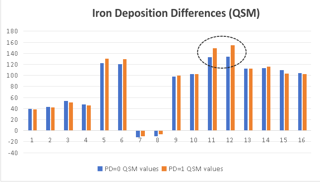

|
 |
 |
欢迎参加基于基础模型的帕金森病自动诊断挑战赛！
近年来，由于帕金森病(PD)的高患病率和提高诊断准确性的需求，其自动诊断受到了广泛关注。帕金森病(PD)的临床诊断通常利用先进磁共振成像(MRI)中的诊断生物标志物。MRI中深部灰质(DGM)组织特性的定量改变可能表明与PD相关的病理生理变化。然而，自动准确的DGM分割面临许多挑战，特别是用于PD确定的核心脑结构(即SNpr和SNpe)难以描绘。缺乏用于PD研究的公共数据集和高质量注释一直是开发具有临床意义的深度学习模型的瓶颈。瑞金影像神经科学小组为PD研究整理了一个多参数MRI数据集，包含全面注释。在本挑战赛中，我们将提供一个包含500名受试者的大型数据集，包含3种MR模态(T1WI、QSM、NM-MRI)和双侧DGM(CN、PUT、GP、STN、SN、RN和DN)掩模注释。挑战赛参与者将在DGM分割和PD诊断任务中展开竞争。应利用可公开获取的基础模型和领域适应技术来解决具有挑战性的PD诊断任务，同时面对数据规模和注释的限制。具体设计了两个竞赛赛道：(1)使用发布的数据和公共基础模型最大化DGM分割的准确性(2)使用发布的数据和公共基础模型最大化PD分类的准确性。
挑战赛亮点
高质量的帕金森病MRI数据
500个样本，包含16个解剖结构
定量磁化率成像(QSM)
神经黑色素敏感MRI
详细的分割掩模
基于基础模型
鼓励使用公共基础模型
知识蒸馏，迁移学习
多模态融合与识别
MICCAI 2025挑战赛
有机会参与顶级期刊发表
获奖团队可在MICCAI研讨会上口头报告
两个赛道均有奖金
摘要
近年来，由于帕金森病(PD)的高患病率和提高诊断准确性的需求，其自动诊断受到了广泛关注。帕金森病(PD)的临床诊断通常利用先进磁共振成像(MRI)中的诊断生物标志物。MRI中深部灰质(DGM)组织特性的定量改变可能表明与PD相关的病理生理变化。然而，自动准确的DGM分割面临许多挑战，特别是用于PD确定的核心脑结构(即SNpr和SNpe)难以描绘。缺乏用于PD研究的公共数据集和高质量注释一直是开发具有临床意义的深度学习模型的瓶颈。瑞金影像神经科学小组为PD研究整理了一个多参数MRI数据集，包含全面注释。在本挑战赛中，我们将提供一个包含500名受试者的大型数据集，包含3种MR模态(T1WI、QSM、NM-MRI)和双侧DGM(CN、PUT、GP、STN、SN、RN和DN)掩模注释。挑战赛参与者将在DGM分割和PD诊断任务中展开竞争。应利用可公开获取的基础模型和领域适应技术来解决具有挑战性的PD诊断任务，同时面对数据规模和注释的限制。具体设计了两个竞赛赛道：(1)使用发布的数据和公共基础模型最大化DGM分割的准确性(2)使用发布的数据和公共基础模型最大化PD分类的准确性。
数据概览
数据标注
深部脑核结构的标注：一位神经放射科医生手动分割了双侧半球的CN、GP、PUT、SN、RN和DN。另一位有5年神经影像学经验的放射科医生复查了所有结构边界。最终，经这两位放射科医生确认的ROI将作为分割模型的金标准。
SN、STN结构的标注：NM-rich区域(SNpc、SN)的ROI由一名评估者在MTC幅度图像和QSM图上使用SPIN软件手动追踪。基于NM的SN边界从最后尾侧切片开始追踪3-5个切片，直到NM-rich区域不再可见。同时，基于铁的SN边界从STN可见的最颅侧切片下方一个切片开始追踪，并连续4-6个切片至最尾侧切片。STN ROI从RN顶部向上追踪2个切片。对于所有ROI，使用动态规划方法(DPA)确定最终边界，以减轻主观偏差。所有这些边界随后由第二位评估者审查，并与第一位评估者达成共识后进行修改。
DGM分割的样本图像和标注掩模。DGM结构的空间变化显示在T1WI MRI和QSM MRI的不同切片中。右上角放大的3D掩模展示了DGM结构之间的体积差异。每个DGM结构有左右区域，分别着色。SNpc分割的样本图像和标注掩模。黑质结构在QSM MRI中部分可见，在NM MRI中部分可见，交叉区域为SNpc区域。
数据集划分
瑞金-PD数据集包含500例多参数MRI病例(PD阳性和健康对照各50%)，总计超过105,000张图像。每个病例包含T1WI、QSM和NM-MRI图像，以及7个PD相关解剖结构的分割掩模。还包括PD分类标签。训练(200例，带标签)和验证(100例，无标签)的图像将在比赛开始时免费提供，而测试图像(200例)将在测试阶段提供(同时提供验证集的标签)。测试集的标签不会发布。所有数据和金标准均未公开发表，并保持机密。
数据划分基于交叉验证原则，以获得最大的随机性和可靠性。划分比例确保足够的训练样本和有意义的测试分数。
挑战赛的创新性
本挑战赛从我们在Neurips 2023举办的先前比赛中学习并扩展，通过追求更详细的基础模型和迁移学习技术视角(即模型适应在不同数据量下的有效性)以及全新的重要临床应用场景(即更侧重临床的任务)。它旨在进一步研究如何利用基础模型的力量来减轻获取高质量注释的工作量，并提高下游临床应用的准确性。这与最近为各种下游应用构建基础模型的趋势和成功相一致。从方法论角度来看，所提出的模型适应范式不同于标准的少样本学习。虽然基础模型的适应可能需要与常规微调/少样本方法相似的数据量，但基本技术路线是不同的。我们的挑战赛更侧重于评估这些领域适应方法在PD诊断背景下的有效性。在这种特定领域中，高质量数据往往稀缺，开发具有有限样本案例的高质量模型对于准确诊断至关重要，这确实更具临床相关性和意义。
任务描述和应用场景
帕金森病(PD)是一种进行性神经退行性疾病，其特征是黑质致密部(SNpc)中的神经黑色素(NM)丢失和黑质(SN)中铁沉积增加。当SNpc腹外侧层色素神经元损失达到50%至70%时，SN的变性变得明显。其他深部灰质(DGM)的铁沉积和体积变化，包括红核(RN)、齿状核(DN)和丘脑底核(STN)，也与疾病进展相关。此外，STN是晚期PD患者深部脑刺激治疗的重要靶点。因此，准确地在体描绘SN和其他DGM对于更好的PD研究至关重要。
伦理批准
本研究获得上海交通大学医学院附属瑞金医院机构伦理委员会批准(No.RJ2022-279)。所有参与者均签署书面知情同意书。
数据洞察
掩模概览
每个病例有两个掩模，QSM掩模和神经黑色素掩模。QSM掩模中有16个标注的解剖结构，NM掩模仅包含黑质(左右)。核区域与标签的对应关系见下表(QSM和NM分别)。
| A | B | C | D | E | F | G | H | |
|---|---|---|---|---|---|---|---|---|
| QSM标签 | 1,2 | 3,4 | 5,6 | 7,8 | 9,10 | 11,12 | 13,14 | 15,16 |
| 核名称 | 尾状核 | 壳核 | 苍白球 | 丘脑 | 丘脑底核 | 黑质 | 红核 | 齿状核 |
| A | |
|---|---|
| NM标签 | 1,2 |
| 核名称 | 黑质 |
这是一个样本的QSM掩模，包含T1-MRI和QSM-MRI扫描。
 |
 |
 |
核统计
我们总结了QSM掩模中16个核区域的平均体积(训练+验证数据，300例)。
| QSM标签 | 1 | 2 | 3 | 4 | 5 | 6 | 7 | 8 | 9 | 10 | 11 | 12 | 13 | 14 | 15 | 16 |
|---|---|---|---|---|---|---|---|---|---|---|---|---|---|---|---|---|
| 体积(cm³) | 3.36 | 2.84 | 3.67 | 3.52 | 1.85 | 2.1 | 4.6 | 4.61 | 0.08 | 0.09 | 0.47 | 0.46 | 0.17 | 0.17 | 0.66 | 0.65 |
我们还计算了NM图像和QSM图像中16个核区域的平均信号强度。在PD患者的黑质中，神经黑色素含量减少，铁沉积明显。
 |
 |
评估指标
分割任务
综合得分计算自：
- 两种模态： QSM(权重：60%)和NM(权重：40%)
- 每个区域的指标： Dice系数(70%)和Hausdorff距离(30%)
- 加权区域： 不同脑区有不同的权重
最终得分 = 所有加权区域得分的总和
分类任务
基于预测准确率(0/1标签)评分
奖励政策
- 两个赛道前三名均有奖金。第一名团队：1000美元，第二名：600美元，第三名：400美元。
- 获奖团队将被邀请作为共同作者提交他们的突破性解决方案总结论文。
- 获奖团队中的学生参与者将被考虑进入组织者机构并获得奖学金
| 获奖者 | 奖金 | 口头报告 | 总结论文 参与 |
| 第一名 | $1,000 |  |
|
| 第二名 | $600 | |
|
| 第三名 | $400 | |
|
DGM分割赛道和PD分割赛道中表现优异的方法将公开发布，在比赛网站和相关研讨会上公布。我们将总结挑战赛结果，并向IEEE TMI或Medical Image Analysis提交论文。所有参赛团队成员都有资格成为作者。
提交
参与者应在验证/测试阶段将方法描述文档/pdf和预测结果(分割掩模和分类标签)发送至pdcadxfoundation@163.com。
详见提交指南
数据下载
时间线
[2025年4月1日] 网站开放注册
[2025年4月1日] 发布训练图像和真实标签
[2025年5月1日] 发布验证图像
[2025年5月1日] 验证提交系统开放
[2025年6月15日] 发布验证真实标签
[2025年6月15日] 测试提交系统开放
[2025年8月15日] 发布测试集图像
[2025年8月15日][2025年8月31日] 提交截止(代码、结果、技术报告)
[2025年9月1日][2025年9月10日] 发布挑战赛最终结果
[2025年9月10日] 挑战赛论文提交截止
[2025年9月27日] 排名靠前的团队在MICCAI年会上报告
🔥 最新更新 🔥
[2025年4月20日] 更新分割评估脚本。
[2025年4月20日] Docker安装和测试说明。
[2025年6月22日] 发布 RRMediCa 作为PD分类基线(63%验证准确率，62%测试准确率)
[2025年6月25日] 发布 基线实现，涵盖分割和分类任务。还包括docker创建指南和预测要求。
[2025年8月2日] 发布验证集掩模和标签
[2025年8月7日] 排行榜上线！
[2025年8月7日] 更新提交说明
[2025年8月11日] 验证排名上线！
[2025年8月12日] 在下载部分发布测试图像。
[2025年8月12日] 查看提交页面上更新的评分标准和提交指南。
联系我们
邮箱：PDCADxFoundation@163.com